炎之波
業火
業火
冰縛
冰縛
暴風雪
暴風雪
天雷
天雷
火之星彈
火之星彈
冰之星彈
冰之星彈
衰弱咒
衰弱咒
雷之星彈
雷之星彈
核准紀錄：user 2026-10-24 (via coordinator): publish the 90 current-roster G3 skill icons - the plan 5d style the user approved (G1/G2 2026-10-20), and the new G4 skill icons were confirmed to match them（2026-10-24）。下面「請你決定的事」是當時的題目，保留作紀錄。
本頁所有像素圖以最近鄰放大顯示。格子、外框位置、名稱與價格是頁面上的示意，不在圖片裡。這些圖要等你在這頁確認之後，才會放進遊戲。
直接回覆每題的選擇，例如：1 可以、2 可以。
所有技能圖示都改成遊戲實際大小的原尺寸圖：技能列 16×16（圖案長邊 14）、技能樹 14×14（圖案長邊 12），一次從高解析原圖縮好，遊戲不再自己縮放，所以不會糊、大小一致。既有的 26 個技能圖示用當初核准的原圖重新縮成同樣大小，沒有重畫。技能改版（2026-10-20 技能 build）刪掉的 15 招不在本頁核准、不會發布，列在「已移除的技能」；新招還沒有圖示的列在「還沒有圖示的技能」，屬於 G4。核准後，遊戲裡的技能列與技能樹會換成這些原尺寸圖示。請看 7. 技能（遊戲實際大小 1 倍與放大 3 倍）與技能尺寸一致性格。
已知風險：
洛恩 21 個、凜 10 個技能以前都沒有圖示，生成時參考他們已發布的立繪配色。請看是否像同一個角色的技能、彼此分得出來。
已知風險：
手機上這張表可以在框內左右捲動。
| id | 名稱 | 工作表 | 狀態 | QA |
|---|---|---|---|---|
| flame-wave | 炎之波 | sheet-skill-noel | 已挑選第 2 版 | 通過技術細節icon-flame-wave-16：published a2 sha 7578bc24c452；icon-flame-wave-14：published a2 sha 51cd303f2d3d；通過｜警告 enclosed holes｜size [16, 16]｜subject {'long': 14, 'short': 13, 'mass': 0.633, 'box': [1, 1, 15, 14], 'centre_off': 0.5}｜scale 31.357｜block 31.357｜residue 0｜semi 0｜holes 1｜magenta_spill 0；通過｜size [14, 14]｜subject {'long': 12, 'short': 10, 'mass': 0.632, 'box': [1, 2, 13, 12], 'centre_off': 0.0}｜scale 36.583｜block 36.583｜residue 0｜semi 0｜holes 0｜magenta_spill 0 |
| inferno | 業火 | sheet-skill-noel | 已挑選第 2 版 | 通過技術細節icon-inferno-16：published a2 sha 6659c7258f42；icon-inferno-14：published a2 sha 34a5806a6136；通過｜size [16, 16]｜subject {'long': 14, 'short': 13, 'mass': 0.638, 'box': [1, 1, 14, 15], 'centre_off': 0.5}｜scale 33.214｜block 33.214｜residue 0｜semi 0｜holes 0｜magenta_spill 0；通過｜size [14, 14]｜subject {'long': 12, 'short': 11, 'mass': 0.646, 'box': [1, 1, 12, 13], 'centre_off': 0.5}｜scale 38.75｜block 38.75｜residue 0｜semi 0｜holes 0｜magenta_spill 0 |
| frost-bind | 冰縛 | sheet-skill-noel | 已挑選第 2 版 | 通過技術細節icon-frost-bind-16：published a2 sha 5d104832e389；icon-frost-bind-14：published a2 sha a2a8ebc2262b；通過｜size [16, 16]｜subject {'long': 14, 'short': 14, 'mass': 0.704, 'box': [1, 1, 15, 15], 'centre_off': 0.0}｜scale 30.357｜block 30.357｜residue 0｜semi 0｜holes 0｜magenta_spill 0；通過｜size [14, 14]｜subject {'long': 12, 'short': 12, 'mass': 0.743, 'box': [1, 1, 13, 13], 'centre_off': 0.0}｜scale 35.417｜block 35.417｜residue 0｜semi 0｜holes 0｜magenta_spill 0 |
| blizzard | 暴風雪 | sheet-skill-noel | 已挑選第 2 版 | 通過技術細節icon-blizzard-16：published a2 sha 75e1cd1f3418；icon-blizzard-14：published a2 sha 746cbc80aaf3；通過｜警告 enclosed holes｜size [16, 16]｜subject {'long': 14, 'short': 14, 'mass': 0.827, 'box': [1, 1, 15, 15], 'centre_off': 0.0}｜scale 30.786｜block 30.786｜residue 0｜semi 0｜holes 1｜magenta_spill 0；通過｜size [14, 14]｜subject {'long': 12, 'short': 12, 'mass': 0.826, 'box': [1, 1, 13, 13], 'centre_off': 0.0}｜scale 35.917｜block 35.917｜residue 0｜semi 0｜holes 0｜magenta_spill 0 |
| judgement | 天雷 | sheet-skill-noel | 已挑選第 2 版 | 通過技術細節icon-judgement-16：published a2 sha 55b2e1e68dda；icon-judgement-14：published a2 sha 244cb5049bdb；通過｜size [16, 16]｜subject {'long': 14, 'short': 12, 'mass': 0.51, 'box': [2, 1, 14, 15], 'centre_off': 0.0}｜scale 33.643｜block 33.643｜residue 0｜semi 0｜holes 0｜magenta_spill 0；通過｜size [14, 14]｜subject {'long': 12, 'short': 10, 'mass': 0.486, 'box': [2, 1, 12, 13], 'centre_off': 0.0}｜scale 39.25｜block 39.25｜residue 0｜semi 0｜holes 0｜magenta_spill 0 |
| spiral-spear | 旋槍 | sheet-skill-chizuru | 已挑選第 1 版 | 通過技術細節icon-spiral-spear-16：published a1 sha 820e9790431b；icon-spiral-spear-14：published a1 sha b33ea4d54a98；通過｜警告 enclosed holes｜size [16, 16]｜subject {'long': 14, 'short': 14, 'mass': 0.602, 'box': [1, 1, 15, 15], 'centre_off': 0.0}｜scale 28.643｜block 28.643｜residue 0｜semi 0｜holes 4｜magenta_spill 0；通過｜警告 enclosed holes｜size [14, 14]｜subject {'long': 12, 'short': 12, 'mass': 0.597, 'box': [1, 1, 13, 13], 'centre_off': 0.0}｜scale 33.417｜block 33.417｜residue 0｜semi 0｜holes 2｜magenta_spill 0 |
| thousand-spear | 千本槍 | sheet-skill-chizuru | 已挑選第 1 版 | 通過技術細節icon-thousand-spear-16：published a1 sha e70d02c87b14；icon-thousand-spear-14：published a1 sha f0f85ece4bfb；通過｜警告 enclosed holes｜size [16, 16]｜subject {'long': 14, 'short': 12, 'mass': 0.602, 'box': [1, 2, 15, 14], 'centre_off': 0.0}｜scale 30.714｜block 30.714｜residue 0｜semi 0｜holes 1｜magenta_spill 0；通過｜size [14, 14]｜subject {'long': 12, 'short': 10, 'mass': 0.583, 'box': [1, 2, 13, 12], 'centre_off': 0.0}｜scale 35.833｜block 35.833｜residue 0｜semi 0｜holes 0｜magenta_spill 0 |
| great-barrier | 大結界 | sheet-skill-chizuru | 已挑選第 1 版 | 通過技術細節icon-great-barrier-16：published a1 sha ae117e133ec0；icon-great-barrier-14：published a1 sha 5baa0619e878；通過｜size [16, 16]｜subject {'long': 14, 'short': 13, 'mass': 0.668, 'box': [1, 1, 15, 14], 'centre_off': 0.5}｜scale 28.786｜block 28.786｜residue 0｜semi 0｜holes 0｜magenta_spill 0；通過｜size [14, 14]｜subject {'long': 12, 'short': 11, 'mass': 0.688, 'box': [1, 1, 13, 12], 'centre_off': 0.5}｜scale 33.583｜block 33.583｜residue 0｜semi 0｜holes 0｜magenta_spill 0 |
| heaven-spear | 天之逆鉾 | sheet-skill-chizuru | 已挑選第 1 版 | 通過技術細節icon-heaven-spear-16：published a1 sha 7de3e417ff83；icon-heaven-spear-14：published a1 sha b650f13c4b00；通過｜警告 enclosed holes｜size [16, 16]｜subject {'long': 14, 'short': 14, 'mass': 0.582, 'box': [1, 1, 15, 15], 'centre_off': 0.0}｜scale 30.143｜block 30.143｜residue 0｜semi 0｜holes 1｜magenta_spill 0；通過｜size [14, 14]｜subject {'long': 12, 'short': 12, 'mass': 0.611, 'box': [1, 1, 13, 13], 'centre_off': 0.0}｜scale 35.167｜block 35.167｜residue 0｜semi 0｜holes 0｜magenta_spill 0 |
| smoke-bomb | 煙霧彈 | sheet-skill-liz | 已挑選第 2 版 | 通過技術細節icon-smoke-bomb-16：published a2 sha a869bd0107bc；icon-smoke-bomb-14：published a2 sha 9be2313552f1；通過｜size [16, 16]｜subject {'long': 14, 'short': 14, 'mass': 0.786, 'box': [1, 1, 15, 15], 'centre_off': 0.0}｜scale 28.214｜block 28.214｜residue 0｜semi 0｜holes 0｜magenta_spill 0；通過｜size [14, 14]｜subject {'long': 12, 'short': 12, 'mass': 0.792, 'box': [1, 1, 13, 13], 'centre_off': 0.0}｜scale 32.917｜block 32.917｜residue 0｜semi 0｜holes 0｜magenta_spill 0 |
| fortune-strike | 大手筆 | sheet-skill-liz | 已挑選第 2 版 | 通過技術細節icon-fortune-strike-16：published a2 sha 20a574db45fd；icon-fortune-strike-14：published a2 sha 53eb16e51dcd；通過｜size [16, 16]｜subject {'long': 14, 'short': 14, 'mass': 0.541, 'box': [1, 1, 15, 15], 'centre_off': 0.0}｜scale 27.429｜block 27.429｜residue 0｜semi 0｜holes 0｜magenta_spill 0；通過｜size [14, 14]｜subject {'long': 12, 'short': 12, 'mass': 0.556, 'box': [1, 1, 13, 13], 'centre_off': 0.0}｜scale 32.0｜block 32.0｜residue 0｜semi 0｜holes 0｜magenta_spill 0 |
| quickstep | 疾步 | sheet-skill-liz | 已挑選第 2 版 | 通過技術細節icon-quickstep-16：published a2 sha 446c239632d5；icon-quickstep-14：published a2 sha e18be6c019dc；通過｜警告 enclosed holes｜size [16, 16]｜subject {'long': 14, 'short': 13, 'mass': 0.612, 'box': [1, 1, 15, 14], 'centre_off': 0.5}｜scale 29.286｜block 29.286｜residue 0｜semi 0｜holes 1｜magenta_spill 0；通過｜size [14, 14]｜subject {'long': 12, 'short': 11, 'mass': 0.625, 'box': [1, 1, 13, 12], 'centre_off': 0.5}｜scale 34.167｜block 34.167｜residue 0｜semi 0｜holes 0｜magenta_spill 0 |
| phantom-step | 幻影步 | sheet-skill-liz | 已挑選第 2 版 | 通過技術細節icon-phantom-step-16：published a2 sha 9f1c441ba7e9；icon-phantom-step-14：published a2 sha 81c6976ddaa4；通過｜size [16, 16]｜subject {'long': 14, 'short': 9, 'mass': 0.474, 'box': [1, 3, 15, 12], 'centre_off': 0.5}｜scale 32.5｜block 32.5｜residue 0｜semi 0｜holes 0｜magenta_spill 0；通過｜size [14, 14]｜subject {'long': 12, 'short': 8, 'mass': 0.486, 'box': [1, 3, 13, 11], 'centre_off': 0.0}｜scale 37.917｜block 37.917｜residue 0｜semi 0｜holes 0｜magenta_spill 0 |
| heart-shot | 穿心箭 | sheet-skill-sylvie | 已挑選第 2 版 | 通過技術細節icon-heart-shot-16：published a2 sha be965ba403bb；icon-heart-shot-14：published a2 sha a8cb90aa2a80；通過｜size [16, 16]｜subject {'long': 14, 'short': 11, 'mass': 0.541, 'box': [1, 2, 15, 13], 'centre_off': 0.5}｜scale 30.214｜block 30.214｜residue 0｜semi 0｜holes 0｜magenta_spill 0；通過｜size [14, 14]｜subject {'long': 12, 'short': 10, 'mass': 0.583, 'box': [1, 2, 13, 12], 'centre_off': 0.0}｜scale 35.25｜block 35.25｜residue 0｜semi 0｜holes 0｜magenta_spill 0 |
| starfall-arrow | 星墜一矢 | sheet-skill-sylvie | 已挑選第 2 版 | 通過技術細節icon-starfall-arrow-16：published a2 sha 7e3eae922a36；icon-starfall-arrow-14：published a2 sha 6982df799824；通過｜size [16, 16]｜subject {'long': 14, 'short': 14, 'mass': 0.49, 'box': [1, 1, 15, 15], 'centre_off': 0.0}｜scale 26.714｜block 26.714｜residue 0｜semi 0｜holes 0｜magenta_spill 0；通過｜size [14, 14]｜subject {'long': 12, 'short': 11, 'mass': 0.472, 'box': [1, 2, 13, 13], 'centre_off': 0.5}｜scale 31.167｜block 31.167｜residue 0｜semi 0｜holes 0｜magenta_spill 0 |
| hunters-mark | 獵人標記 | sheet-skill-sylvie | 已挑選第 2 版 | 通過技術細節icon-hunters-mark-16：published a2 sha 04532198d626；icon-hunters-mark-14：published a2 sha df8f767bbb02；通過｜size [16, 16]｜subject {'long': 14, 'short': 14, 'mass': 0.648, 'box': [1, 1, 15, 15], 'centre_off': 0.0}｜scale 29.0｜block 29.0｜residue 0｜semi 0｜holes 0｜magenta_spill 0；通過｜size [14, 14]｜subject {'long': 12, 'short': 12, 'mass': 0.667, 'box': [1, 1, 13, 13], 'centre_off': 0.0}｜scale 33.833｜block 33.833｜residue 0｜semi 0｜holes 0｜magenta_spill 0 |
| unbreakable | 不屈 | sheet-skill-scarlet | 已挑選第 1 版 | 通過技術細節icon-unbreakable-16：published a1 sha ce61dfee1659；icon-unbreakable-14：published a1 sha 2781ae5e5590；通過｜size [16, 16]｜subject {'long': 14, 'short': 14, 'mass': 0.75, 'box': [1, 1, 15, 15], 'centre_off': 0.0}｜scale 28.571｜block 28.571｜residue 0｜semi 0｜holes 0｜magenta_spill 0；通過｜size [14, 14]｜subject {'long': 12, 'short': 12, 'mass': 0.771, 'box': [1, 1, 13, 13], 'centre_off': 0.0}｜scale 33.333｜block 33.333｜residue 0｜semi 0｜holes 0｜magenta_spill 0 |
| blaze-ring | 炎環斬 | sheet-skill-scarlet | 已挑選第 1 版 | 通過技術細節icon-blaze-ring-16：published a1 sha 9f72aeb18f5c；icon-blaze-ring-14：published a1 sha c4ab8e5cf4cc；通過｜警告 enclosed holes｜size [16, 16]｜subject {'long': 14, 'short': 13, 'mass': 0.622, 'box': [1, 1, 15, 14], 'centre_off': 0.5}｜scale 31.643｜block 31.643｜residue 0｜semi 0｜holes 3｜magenta_spill 0；通過｜警告 enclosed holes｜size [14, 14]｜subject {'long': 12, 'short': 11, 'mass': 0.625, 'box': [1, 1, 13, 12], 'centre_off': 0.5}｜scale 36.917｜block 36.917｜residue 0｜semi 0｜holes 1｜magenta_spill 0 |
| crimson-end | 紅蓮終焉 | sheet-skill-scarlet | 已挑選第 1 版 | 通過技術細節icon-crimson-end-16：published a1 sha 8235934aa349；icon-crimson-end-14：published a1 sha f16fac362977；通過｜size [16, 16]｜subject {'long': 14, 'short': 13, 'mass': 0.612, 'box': [1, 1, 15, 14], 'centre_off': 0.5}｜scale 33.071｜block 33.071｜residue 0｜semi 0｜holes 0｜magenta_spill 0；通過｜警告 enclosed holes｜size [14, 14]｜subject {'long': 12, 'short': 11, 'mass': 0.632, 'box': [1, 1, 13, 12], 'centre_off': 0.5}｜scale 38.583｜block 38.583｜residue 0｜semi 0｜holes 1｜magenta_spill 0 |
| shield-bash | 盾擊 | sheet-skill-scarlet | 已挑選第 1 版 | 通過技術細節icon-shield-bash-16：published a1 sha 9994991b4ad0；icon-shield-bash-14：published a1 sha f1b2a3b02c7c；通過｜size [16, 16]｜subject {'long': 14, 'short': 12, 'mass': 0.668, 'box': [1, 2, 15, 14], 'centre_off': 0.0}｜scale 31.357｜block 31.357｜residue 0｜semi 0｜holes 0｜magenta_spill 0；通過｜size [14, 14]｜subject {'long': 12, 'short': 11, 'mass': 0.681, 'box': [1, 2, 13, 13], 'centre_off': 0.5}｜scale 36.583｜block 36.583｜residue 0｜semi 0｜holes 0｜magenta_spill 0 |
| moon-rain | 月光雨 | sheet-skill-selene | 已挑選第 1 版 | 通過技術細節icon-moon-rain-16：published a1 sha 005a6edc47a5；icon-moon-rain-14：published a1 sha 20a70a6e3343；通過｜警告 enclosed holes｜size [16, 16]｜subject {'long': 14, 'short': 11, 'mass': 0.434, 'box': [2, 1, 13, 15], 'centre_off': 0.5}｜scale 28.786｜block 28.786｜residue 0｜semi 0｜holes 3｜magenta_spill 0；通過｜警告 enclosed holes｜size [14, 14]｜subject {'long': 12, 'short': 9, 'mass': 0.41, 'box': [2, 1, 11, 13], 'centre_off': 0.5}｜scale 33.583｜block 33.583｜residue 0｜semi 0｜holes 1｜magenta_spill 0 |
| full-moon | 滿月之癒 | sheet-skill-selene | 已挑選第 1 版 | 通過技術細節icon-full-moon-16：published a1 sha 5b9884874ab4；icon-full-moon-14：published a1 sha bce25af286ec；通過｜size [16, 16]｜subject {'long': 14, 'short': 13, 'mass': 0.638, 'box': [1, 1, 15, 14], 'centre_off': 0.5}｜scale 27.714｜block 27.714｜residue 0｜semi 0｜holes 0｜magenta_spill 0；通過｜size [14, 14]｜subject {'long': 12, 'short': 11, 'mass': 0.618, 'box': [1, 1, 13, 12], 'centre_off': 0.5}｜scale 32.333｜block 32.333｜residue 0｜semi 0｜holes 0｜magenta_spill 0 |
| moon-arrow | 月影箭 | sheet-skill-selene | 已挑選第 1 版 | 通過技術細節icon-moon-arrow-16：published a1 sha 8e950605fe65；icon-moon-arrow-14：published a1 sha e82299b6e1c8；通過｜size [16, 16]｜subject {'long': 13, 'short': 11, 'mass': 0.301, 'box': [2, 2, 15, 13], 'centre_off': 0.707}｜scale 30.786｜block 30.786｜residue 0｜semi 0｜holes 0｜magenta_spill 0；通過｜size [14, 14]｜subject {'long': 11, 'short': 9, 'mass': 0.312, 'box': [2, 2, 13, 11], 'centre_off': 0.707}｜scale 35.917｜block 35.917｜residue 0｜semi 0｜holes 0｜magenta_spill 0 |
| lunar-eclipse | 月蝕 | sheet-skill-selene | 已挑選第 1 版 | 通過技術細節icon-lunar-eclipse-16：published a1 sha f7103b8e03e8；icon-lunar-eclipse-14：published a1 sha 8b36f9e597d5；通過｜size [16, 16]｜subject {'long': 14, 'short': 13, 'mass': 0.663, 'box': [1, 1, 15, 14], 'centre_off': 0.5}｜scale 30.0｜block 30.0｜residue 0｜semi 0｜holes 0｜magenta_spill 0；通過｜警告 enclosed holes｜size [14, 14]｜subject {'long': 12, 'short': 11, 'mass': 0.674, 'box': [1, 1, 13, 12], 'centre_off': 0.5}｜scale 35.0｜block 35.0｜residue 0｜semi 0｜holes 1｜magenta_spill 0 |
| sand-cyclone | 沙暴旋舞 | sheet-skill-safira | 已挑選第 1 版 | 通過技術細節icon-sand-cyclone-16：published a1 sha 7efda384f402；icon-sand-cyclone-14：published a1 sha 7aa2483acbec；通過｜size [16, 16]｜subject {'long': 14, 'short': 14, 'mass': 0.76, 'box': [1, 1, 15, 15], 'centre_off': 0.0}｜scale 28.429｜block 28.429｜residue 0｜semi 0｜holes 0｜magenta_spill 0；通過｜size [14, 14]｜subject {'long': 12, 'short': 12, 'mass': 0.792, 'box': [1, 1, 13, 13], 'centre_off': 0.0}｜scale 33.167｜block 33.167｜residue 0｜semi 0｜holes 0｜magenta_spill 0 |
| thousand-shadows | 千影刃 | sheet-skill-safira | 已挑選第 1 版 | 通過技術細節icon-thousand-shadows-16：published a1 sha b5293f078e81；icon-thousand-shadows-14：published a1 sha 0f0d8fecb3d6；通過｜警告 enclosed holes｜size [16, 16]｜subject {'long': 14, 'short': 14, 'mass': 0.75, 'box': [1, 1, 15, 15], 'centre_off': 0.0}｜scale 27.714｜block 27.714｜residue 0｜semi 0｜holes 4｜magenta_spill 0；通過｜警告 enclosed holes｜size [14, 14]｜subject {'long': 12, 'short': 12, 'mass': 0.729, 'box': [1, 1, 13, 13], 'centre_off': 0.0}｜scale 32.333｜block 32.333｜residue 0｜semi 0｜holes 1｜magenta_spill 0 |
| desert-festival | 沙漠祭典 | sheet-skill-safira | 已挑選第 1 版 | 通過技術細節icon-desert-festival-16：published a1 sha f68648312a51；icon-desert-festival-14：published a1 sha 7384946ea5bb；通過｜警告 enclosed holes｜size [16, 16]｜subject {'long': 14, 'short': 13, 'mass': 0.577, 'box': [1, 2, 15, 15], 'centre_off': 0.5}｜scale 30.357｜block 30.357｜residue 0｜semi 0｜holes 1｜magenta_spill 0；通過｜警告 enclosed holes｜size [14, 14]｜subject {'long': 12, 'short': 11, 'mass': 0.632, 'box': [1, 2, 13, 13], 'centre_off': 0.5}｜scale 35.417｜block 35.417｜residue 0｜semi 0｜holes 1｜magenta_spill 0 |
| shadow-step | 影步斬 | sheet-skill-safira | 已挑選第 1 版 | 通過技術細節icon-shadow-step-16：published a1 sha ce3ebbc7e258；icon-shadow-step-14：published a1 sha 92ef4611946d；通過｜size [16, 16]｜subject {'long': 14, 'short': 13, 'mass': 0.592, 'box': [1, 1, 14, 15], 'centre_off': 0.5}｜scale 29.071｜block 29.071｜residue 0｜semi 0｜holes 0｜magenta_spill 0；通過｜size [14, 14]｜subject {'long': 12, 'short': 11, 'mass': 0.597, 'box': [1, 1, 12, 13], 'centre_off': 0.5}｜scale 33.917｜block 33.917｜residue 0｜semi 0｜holes 0｜magenta_spill 0 |
| cannon | 加農砲 | sheet-skill-bobby | 已挑選第 2 版 | 通過技術細節icon-cannon-16：published a2 sha b0eacd7d6cdb；icon-cannon-14：published a2 sha f68597e695d4；通過｜size [16, 16]｜subject {'long': 14, 'short': 11, 'mass': 0.48, 'box': [1, 2, 15, 13], 'centre_off': 0.5}｜scale 32.286｜block 32.286｜residue 0｜semi 0｜holes 0｜magenta_spill 0；通過｜size [14, 14]｜subject {'long': 12, 'short': 10, 'mass': 0.507, 'box': [1, 2, 13, 12], 'centre_off': 0.0}｜scale 37.667｜block 37.667｜residue 0｜semi 0｜holes 0｜magenta_spill 0 |
| overclock | 超頻 | sheet-skill-bobby | 已挑選第 2 版 | 通過技術細節icon-overclock-16：published a2 sha 0e076f8f81aa；icon-overclock-14：published a2 sha bdd858a3d654；通過｜size [16, 16]｜subject {'long': 13, 'short': 11, 'mass': 0.495, 'box': [2, 2, 15, 13], 'centre_off': 0.707}｜scale 30.857｜block 30.857｜residue 0｜semi 0｜holes 0｜magenta_spill 0；通過｜size [14, 14]｜subject {'long': 11, 'short': 9, 'mass': 0.486, 'box': [2, 2, 13, 11], 'centre_off': 0.707}｜scale 36.0｜block 36.0｜residue 0｜semi 0｜holes 0｜magenta_spill 0 |
| emergency-repair | 全面整備 | sheet-skill-bobby | 已挑選第 2 版 | 通過技術細節icon-emergency-repair-16：published a2 sha 9e881475bd41；icon-emergency-repair-14：published a2 sha d1041e8b5cff；通過｜size [16, 16]｜subject {'long': 14, 'short': 14, 'mass': 0.684, 'box': [1, 1, 15, 15], 'centre_off': 0.0}｜scale 27.5｜block 27.5｜residue 0｜semi 0｜holes 0｜magenta_spill 0；通過｜size [14, 14]｜subject {'long': 12, 'short': 12, 'mass': 0.715, 'box': [1, 1, 13, 13], 'centre_off': 0.0}｜scale 32.083｜block 32.083｜residue 0｜semi 0｜holes 0｜magenta_spill 0 |
| shock-mine | 電擊地雷 | sheet-skill-bobby | 已挑選第 2 版 | 通過技術細節icon-shock-mine-16：published a2 sha 0903f7eddcbf；icon-shock-mine-14：published a2 sha 1de0cac99125；通過｜size [16, 16]｜subject {'long': 13, 'short': 13, 'mass': 0.633, 'box': [1, 2, 14, 15], 'centre_off': 0.707}｜scale 27.286｜block 27.286｜residue 0｜semi 0｜holes 0｜magenta_spill 0；通過｜size [14, 14]｜subject {'long': 11, 'short': 11, 'mass': 0.625, 'box': [1, 2, 12, 13], 'centre_off': 0.707}｜scale 31.833｜block 31.833｜residue 0｜semi 0｜holes 0｜magenta_spill 0 |
| tesla-coil | 特斯拉線圈 | sheet-skill-bobby | 已挑選第 2 版 | 通過技術細節icon-tesla-coil-16：published a2 sha 2c6928f1b65c；icon-tesla-coil-14：published a2 sha d1a00d05443f；通過｜size [16, 16]｜subject {'long': 14, 'short': 14, 'mass': 0.551, 'box': [1, 1, 15, 15], 'centre_off': 0.0}｜scale 27.929｜block 27.929｜residue 0｜semi 0｜holes 0｜magenta_spill 0；通過｜size [14, 14]｜subject {'long': 12, 'short': 12, 'mass': 0.556, 'box': [1, 1, 13, 13], 'centre_off': 0.0}｜scale 32.583｜block 32.583｜residue 0｜semi 0｜holes 0｜magenta_spill 0 |
| rin-needle | 飛針 | sheet-skill-rin-1 | 已挑選第 2 版 | 通過技術細節icon-rin-needle-16：published a2 sha d8a8f272c7eb；icon-rin-needle-14：published a2 sha abe3e7833b7b；通過｜size [16, 16]｜subject {'long': 13, 'short': 10, 'mass': 0.26, 'box': [2, 3, 15, 13], 'centre_off': 0.5}｜scale 28.143｜block 28.143｜residue 0｜semi 0｜holes 0｜magenta_spill 0；通過｜size [14, 14]｜subject {'long': 11, 'short': 8, 'mass': 0.264, 'box': [2, 3, 13, 11], 'centre_off': 0.5}｜scale 32.833｜block 32.833｜residue 0｜semi 0｜holes 0｜magenta_spill 0 |
| rin-fan | 扇形針 | sheet-skill-rin-1 | 已挑選第 2 版 | 通過技術細節icon-rin-fan-16：published a2 sha 16ba29fc115b；icon-rin-fan-14：published a2 sha 6867974f6165；通過｜size [16, 16]｜subject {'long': 14, 'short': 11, 'mass': 0.352, 'box': [1, 3, 15, 14], 'centre_off': 0.5}｜scale 29.071｜block 29.071｜residue 0｜semi 0｜holes 0｜magenta_spill 0；通過｜size [14, 14]｜subject {'long': 12, 'short': 9, 'mass': 0.41, 'box': [1, 3, 13, 12], 'centre_off': 0.5}｜scale 33.917｜block 33.917｜residue 0｜semi 0｜holes 0｜magenta_spill 0 |
| rin-venom-needle | 毒針 | sheet-skill-rin-1 | 已挑選第 2 版 | 通過技術細節icon-rin-venom-needle-16：published a2 sha c3a8fa6e6db2；icon-rin-venom-needle-14：published a2 sha 32fc5773c567；通過｜size [16, 16]｜subject {'long': 14, 'short': 11, 'mass': 0.209, 'box': [2, 1, 13, 15], 'centre_off': 0.5}｜scale 25.786｜block 25.786｜residue 0｜semi 0｜holes 0｜magenta_spill 0；通過｜size [14, 14]｜subject {'long': 12, 'short': 10, 'mass': 0.229, 'box': [2, 1, 12, 13], 'centre_off': 0.0}｜scale 30.083｜block 30.083｜residue 0｜semi 0｜holes 0｜magenta_spill 0 |
| rin-storm | 千針 | sheet-skill-rin-1 | 已挑選第 2 版 | 通過技術細節icon-rin-storm-16：published a2 sha a6722779ec00；icon-rin-storm-14：published a2 sha 649f071b170a；通過｜size [16, 16]｜subject {'long': 14, 'short': 13, 'mass': 0.337, 'box': [1, 1, 15, 14], 'centre_off': 0.5}｜scale 28.214｜block 28.214｜residue 0｜semi 0｜holes 0｜magenta_spill 0；通過｜size [14, 14]｜subject {'long': 12, 'short': 12, 'mass': 0.389, 'box': [1, 1, 13, 13], 'centre_off': 0.0}｜scale 32.917｜block 32.917｜residue 0｜semi 0｜holes 0｜magenta_spill 0 |
| rin-backstab | 背刺 | sheet-skill-rin-1 | 已挑選第 2 版 | 通過技術細節icon-rin-backstab-16：published a2 sha 1bb35c96d2b3；icon-rin-backstab-14：published a2 sha 20433deb0035；通過｜size [16, 16]｜subject {'long': 14, 'short': 13, 'mass': 0.541, 'box': [1, 1, 14, 15], 'centre_off': 0.5}｜scale 27.929｜block 27.929｜residue 0｜semi 0｜holes 0｜magenta_spill 0；通過｜size [14, 14]｜subject {'long': 12, 'short': 11, 'mass': 0.514, 'box': [1, 1, 12, 13], 'centre_off': 0.5}｜scale 32.583｜block 32.583｜residue 0｜semi 0｜holes 0｜magenta_spill 0 |
| rin-veil | 隱匿 | sheet-skill-rin-1 | 已挑選第 2 版 | 通過技術細節icon-rin-veil-16：published a2 sha 97e1062b6326；icon-rin-veil-14：published a2 sha 8c56686ddf34；通過｜size [16, 16]｜subject {'long': 14, 'short': 14, 'mass': 0.633, 'box': [1, 1, 15, 15], 'centre_off': 0.0}｜scale 29.071｜block 29.071｜residue 0｜semi 0｜holes 0｜magenta_spill 0；通過｜size [14, 14]｜subject {'long': 12, 'short': 12, 'mass': 0.646, 'box': [1, 1, 13, 13], 'centre_off': 0.0}｜scale 33.917｜block 33.917｜residue 0｜semi 0｜holes 0｜magenta_spill 0 |
| rin-shadowless | 無影 | sheet-skill-rin-2 | 已挑選第 2 版 | 通過技術細節icon-rin-shadowless-16：published a2 sha 50adf648568b；icon-rin-shadowless-14：published a2 sha 8149e79301bf；通過｜size [16, 16]｜subject {'long': 13, 'short': 13, 'mass': 0.474, 'box': [1, 1, 14, 14], 'centre_off': 0.707}｜scale 26.071｜block 26.071｜residue 0｜semi 0｜holes 0｜magenta_spill 0；通過｜size [14, 14]｜subject {'long': 12, 'short': 11, 'mass': 0.493, 'box': [1, 1, 12, 13], 'centre_off': 0.5}｜scale 30.417｜block 30.417｜residue 0｜semi 0｜holes 0｜magenta_spill 0 |
| rin-mark | 暗記 | sheet-skill-rin-2 | 已挑選第 1 版 | 通過技術細節icon-rin-mark-16：published a1 sha 11ee92decf74；icon-rin-mark-14：published a1 sha c12e3926a603；通過｜size [16, 16]｜subject {'long': 13, 'short': 13, 'mass': 0.316, 'box': [1, 1, 14, 14], 'centre_off': 0.707}｜scale 30.929｜block 30.929｜residue 0｜semi 0｜holes 0｜magenta_spill 0；通過｜size [14, 14]｜subject {'long': 11, 'short': 10, 'mass': 0.312, 'box': [2, 1, 12, 12], 'centre_off': 0.5}｜scale 36.083｜block 36.083｜residue 0｜semi 0｜holes 0｜magenta_spill 0 |
| rin-execute | 處決 | sheet-skill-rin-2 | 已挑選第 2 版 | 通過技術細節icon-rin-execute-16：published a2 sha 2431b2d61741；icon-rin-execute-14：published a2 sha 8b59494b6675；通過｜size [16, 16]｜subject {'long': 14, 'short': 14, 'mass': 0.485, 'box': [1, 1, 15, 15], 'centre_off': 0.0}｜scale 28.357｜block 28.357｜residue 0｜semi 0｜holes 0｜magenta_spill 0；通過｜size [14, 14]｜subject {'long': 12, 'short': 12, 'mass': 0.5, 'box': [1, 1, 13, 13], 'centre_off': 0.0}｜scale 33.083｜block 33.083｜residue 0｜semi 0｜holes 0｜magenta_spill 0 |
| rin-deathblow | 斷命 | sheet-skill-rin-2 | 已挑選第 2 版 | 通過技術細節icon-rin-deathblow-16：published a2 sha fc1937ecf461；icon-rin-deathblow-14：published a2 sha 61097ac91d5f；通過｜size [16, 16]｜subject {'long': 14, 'short': 11, 'mass': 0.531, 'box': [1, 2, 15, 13], 'centre_off': 0.5}｜scale 29.071｜block 29.071｜residue 0｜semi 0｜holes 0｜magenta_spill 0；通過｜size [14, 14]｜subject {'long': 12, 'short': 10, 'mass': 0.597, 'box': [1, 2, 13, 12], 'centre_off': 0.0}｜scale 33.917｜block 33.917｜residue 0｜semi 0｜holes 0｜magenta_spill 0 |
| hero-slash | 斬擊 | sheet-skill-hero-1 | 已挑選第 2 版 | 通過技術細節icon-hero-slash-16：published a2 sha d5ebc7e5152b；icon-hero-slash-14：published a2 sha aa886857d792；通過｜size [16, 16]｜subject {'long': 14, 'short': 14, 'mass': 0.444, 'box': [1, 1, 15, 15], 'centre_off': 0.0}｜scale 26.714｜block 26.714｜residue 0｜semi 0｜holes 0｜magenta_spill 0；通過｜size [14, 14]｜subject {'long': 12, 'short': 12, 'mass': 0.451, 'box': [1, 1, 13, 13], 'centre_off': 0.0}｜scale 31.167｜block 31.167｜residue 0｜semi 0｜holes 0｜magenta_spill 0 |
| hero-cleave | 迴旋斬 | sheet-skill-hero-1 | 已挑選第 2 版 | 通過技術細節icon-hero-cleave-16：published a2 sha 15361c862c25；icon-hero-cleave-14：published a2 sha b9cdda6d5f2c；通過｜警告 enclosed holes｜size [16, 16]｜subject {'long': 14, 'short': 13, 'mass': 0.612, 'box': [1, 1, 14, 15], 'centre_off': 0.5}｜scale 27.0｜block 27.0｜residue 0｜semi 0｜holes 5｜magenta_spill 0；通過｜警告 enclosed holes｜size [14, 14]｜subject {'long': 12, 'short': 11, 'mass': 0.646, 'box': [1, 1, 12, 13], 'centre_off': 0.5}｜scale 31.5｜block 31.5｜residue 0｜semi 0｜holes 2｜magenta_spill 0 |
| hero-sunder | 破甲斬 | sheet-skill-hero-1 | 已挑選第 2 版 | 通過技術細節icon-hero-sunder-16：published a2 sha d592eff4ce8d；icon-hero-sunder-14：published a2 sha 1b5e358d8164；通過｜size [16, 16]｜subject {'long': 14, 'short': 12, 'mass': 0.541, 'box': [2, 1, 14, 15], 'centre_off': 0.0}｜scale 28.214｜block 28.214｜residue 0｜semi 0｜holes 0｜magenta_spill 0；通過｜size [14, 14]｜subject {'long': 12, 'short': 11, 'mass': 0.576, 'box': [1, 1, 12, 13], 'centre_off': 0.5}｜scale 32.917｜block 32.917｜residue 0｜semi 0｜holes 0｜magenta_spill 0 |
| abyss-sword | 深淵・劍 | sheet-skill-hero-1 | 已挑選第 2 版 | 通過技術細節icon-abyss-sword-16：published a2 sha f798dacfc157；icon-abyss-sword-14：published a2 sha c9bc1e349fb4；通過｜size [16, 16]｜subject {'long': 14, 'short': 13, 'mass': 0.612, 'box': [1, 1, 14, 15], 'centre_off': 0.5}｜scale 28.429｜block 28.429｜residue 0｜semi 0｜holes 0｜magenta_spill 0；通過｜size [14, 14]｜subject {'long': 12, 'short': 11, 'mass': 0.597, 'box': [1, 1, 12, 13], 'centre_off': 0.5}｜scale 33.167｜block 33.167｜residue 0｜semi 0｜holes 0｜magenta_spill 0 |
| hero-guard | 守勢 | sheet-skill-hero-1 | 已挑選第 2 版 | 通過技術細節icon-hero-guard-16：published a2 sha 35154bb81bb7；icon-hero-guard-14：published a2 sha 7649fab1fd58；通過｜size [16, 16]｜subject {'long': 14, 'short': 12, 'mass': 0.505, 'box': [2, 1, 14, 15], 'centre_off': 0.0}｜scale 29.5｜block 29.5｜residue 0｜semi 0｜holes 0｜magenta_spill 0；通過｜size [14, 14]｜subject {'long': 12, 'short': 10, 'mass': 0.458, 'box': [2, 1, 12, 13], 'centre_off': 0.0}｜scale 34.417｜block 34.417｜residue 0｜semi 0｜holes 0｜magenta_spill 0 |
| hero-aegis | 庇護 | sheet-skill-hero-1 | 已挑選第 2 版 | 通過技術細節icon-hero-aegis-16：published a2 sha 461dc309a5da；icon-hero-aegis-14：published a2 sha f830e3fb15f4；通過｜警告 enclosed holes｜size [16, 16]｜subject {'long': 14, 'short': 13, 'mass': 0.673, 'box': [1, 2, 15, 15], 'centre_off': 0.5}｜scale 28.786｜block 28.786｜residue 0｜semi 0｜holes 2｜magenta_spill 0；通過｜size [14, 14]｜subject {'long': 12, 'short': 11, 'mass': 0.722, 'box': [1, 2, 13, 13], 'centre_off': 0.5}｜scale 33.583｜block 33.583｜residue 0｜semi 0｜holes 0｜magenta_spill 0 |
| hero-rally | 鼓舞 | sheet-skill-hero-2 | 已挑選第 2 版 | 通過技術細節icon-hero-rally-16：published a2 sha fa59a85705d0；icon-hero-rally-14：published a2 sha b85869cd0150；通過｜size [16, 16]｜subject {'long': 14, 'short': 14, 'mass': 0.597, 'box': [1, 1, 15, 15], 'centre_off': 0.0}｜scale 28.786｜block 28.786｜residue 0｜semi 0｜holes 0｜magenta_spill 0；通過｜size [14, 14]｜subject {'long': 12, 'short': 12, 'mass': 0.597, 'box': [1, 1, 13, 13], 'centre_off': 0.0}｜scale 33.583｜block 33.583｜residue 0｜semi 0｜holes 0｜magenta_spill 0 |
| abyss-guard | 深淵・守 | sheet-skill-hero-2 | 已挑選第 2 版 | 通過技術細節icon-abyss-guard-16：published a2 sha ef3b461bd664；icon-abyss-guard-14：published a2 sha b8fcfec2f79b；通過｜size [16, 16]｜subject {'long': 14, 'short': 14, 'mass': 0.597, 'box': [1, 1, 15, 15], 'centre_off': 0.0}｜scale 31.143｜block 31.143｜residue 0｜semi 0｜holes 0｜magenta_spill 0；通過｜size [14, 14]｜subject {'long': 12, 'short': 12, 'mass': 0.604, 'box': [1, 1, 13, 13], 'centre_off': 0.0}｜scale 36.333｜block 36.333｜residue 0｜semi 0｜holes 0｜magenta_spill 0 |
| hero-flare | 星火 | sheet-skill-hero-2 | 已挑選第 2 版 | 通過技術細節icon-hero-flare-16：published a2 sha 02c15825bdc0；icon-hero-flare-14：published a2 sha e89bc321b494；通過｜警告 enclosed holes｜size [16, 16]｜subject {'long': 14, 'short': 13, 'mass': 0.566, 'box': [1, 2, 15, 15], 'centre_off': 0.5}｜scale 29.357｜block 29.357｜residue 0｜semi 0｜holes 1｜magenta_spill 0；通過｜警告 enclosed holes｜size [14, 14]｜subject {'long': 12, 'short': 11, 'mass': 0.583, 'box': [1, 2, 13, 13], 'centre_off': 0.5}｜scale 34.25｜block 34.25｜residue 0｜semi 0｜holes 1｜magenta_spill 0 |
| hero-frost | 星霜 | sheet-skill-hero-2 | 已挑選第 2 版 | 通過技術細節icon-hero-frost-16：published a2 sha d2cfa14005b7；icon-hero-frost-14：published a2 sha e97c6f87b85c；通過｜size [16, 16]｜subject {'long': 14, 'short': 12, 'mass': 0.474, 'box': [2, 1, 14, 15], 'centre_off': 0.0}｜scale 31.143｜block 31.143｜residue 0｜semi 0｜holes 0｜magenta_spill 0；通過｜size [14, 14]｜subject {'long': 12, 'short': 10, 'mass': 0.465, 'box': [2, 1, 12, 13], 'centre_off': 0.0}｜scale 36.333｜block 36.333｜residue 0｜semi 0｜holes 0｜magenta_spill 0 |
| hero-spark | 星雷 | sheet-skill-hero-2 | 已挑選第 2 版 | 通過技術細節icon-hero-spark-16：published a2 sha 94cd5240bea5；icon-hero-spark-14：published a2 sha 996c480d8bc7；通過｜警告 enclosed holes｜size [16, 16]｜subject {'long': 13, 'short': 13, 'mass': 0.418, 'box': [1, 2, 14, 15], 'centre_off': 0.707}｜scale 30.357｜block 30.357｜residue 0｜semi 0｜holes 2｜magenta_spill 0；通過｜警告 enclosed holes｜size [14, 14]｜subject {'long': 12, 'short': 10, 'mass': 0.424, 'box': [2, 1, 12, 13], 'centre_off': 0.0}｜scale 35.417｜block 35.417｜residue 0｜semi 0｜holes 1｜magenta_spill 0 |
| abyss-star | 深淵・星 | sheet-skill-hero-2 | 已挑選第 2 版 | 通過技術細節icon-abyss-star-16：published a2 sha 6efdb007d92b；icon-abyss-star-14：published a2 sha 4d1a4326b4ba；通過｜size [16, 16]｜subject {'long': 14, 'short': 14, 'mass': 0.628, 'box': [1, 1, 15, 15], 'centre_off': 0.0}｜scale 30.286｜block 30.286｜residue 0｜semi 0｜holes 0｜magenta_spill 0；通過｜size [14, 14]｜subject {'long': 12, 'short': 12, 'mass': 0.632, 'box': [1, 1, 13, 13], 'centre_off': 0.0}｜scale 35.333｜block 35.333｜residue 0｜semi 0｜holes 0｜magenta_spill 0 |
| hero-mend | 治癒 | sheet-skill-hero-3 | 已挑選第 1 版 | 通過技術細節icon-hero-mend-16：published a1 sha 6565fc3ee74e；icon-hero-mend-14：published a1 sha 3122ecc3b2e2；通過｜size [16, 16]｜subject {'long': 14, 'short': 14, 'mass': 0.49, 'box': [1, 1, 15, 15], 'centre_off': 0.0}｜scale 26.786｜block 26.786｜residue 0｜semi 0｜holes 0｜magenta_spill 0；通過｜size [14, 14]｜subject {'long': 12, 'short': 12, 'mass': 0.493, 'box': [1, 1, 13, 13], 'centre_off': 0.0}｜scale 31.25｜block 31.25｜residue 0｜semi 0｜holes 0｜magenta_spill 0 |
| hero-prayer | 祈禱 | sheet-skill-hero-3 | 已挑選第 1 版 | 通過技術細節icon-hero-prayer-16：published a1 sha b1f925328553；icon-hero-prayer-14：published a1 sha 8934d9c739e1；通過｜size [16, 16]｜subject {'long': 14, 'short': 13, 'mass': 0.704, 'box': [1, 1, 14, 15], 'centre_off': 0.5}｜scale 24.571｜block 24.571｜residue 0｜semi 0｜holes 0｜magenta_spill 0；通過｜size [14, 14]｜subject {'long': 12, 'short': 11, 'mass': 0.708, 'box': [1, 1, 12, 13], 'centre_off': 0.5}｜scale 28.667｜block 28.667｜residue 0｜semi 0｜holes 0｜magenta_spill 0 |
| hero-purify | 淨光 | sheet-skill-hero-3 | 已挑選第 1 版 | 通過技術細節icon-hero-purify-16：published a1 sha a1437e82752a；icon-hero-purify-14：published a1 sha b8fbfdff4553；通過｜size [16, 16]｜subject {'long': 14, 'short': 13, 'mass': 0.638, 'box': [1, 1, 15, 14], 'centre_off': 0.5}｜scale 25.071｜block 25.071｜residue 0｜semi 0｜holes 0｜magenta_spill 0；通過｜size [14, 14]｜subject {'long': 12, 'short': 11, 'mass': 0.639, 'box': [1, 1, 13, 12], 'centre_off': 0.5}｜scale 29.25｜block 29.25｜residue 0｜semi 0｜holes 0｜magenta_spill 0 |
| abyss-light | 深淵・光 | sheet-skill-hero-3 | 已挑選第 1 版 | 通過技術細節icon-abyss-light-16：published a1 sha 9905c554d40d；icon-abyss-light-14：published a1 sha 35bf91b407b1；通過｜size [16, 16]｜subject {'long': 14, 'short': 13, 'mass': 0.495, 'box': [1, 1, 14, 15], 'centre_off': 0.5}｜scale 27.286｜block 27.286｜residue 0｜semi 0｜holes 0｜magenta_spill 0；通過｜size [14, 14]｜subject {'long': 12, 'short': 12, 'mass': 0.528, 'box': [1, 1, 13, 13], 'centre_off': 0.0}｜scale 31.833｜block 31.833｜residue 0｜semi 0｜holes 0｜magenta_spill 0 |
| hero-shackle | 枷鎖 | sheet-skill-hero-3 | 已挑選第 1 版 | 通過技術細節icon-hero-shackle-16：published a1 sha a69c16ce4bee；icon-hero-shackle-14：published a1 sha 12f2e9d6ff71；通過｜警告 enclosed holes｜size [16, 16]｜subject {'long': 14, 'short': 14, 'mass': 0.735, 'box': [1, 1, 15, 15], 'centre_off': 0.0}｜scale 26.143｜block 26.143｜residue 0｜semi 0｜holes 1｜magenta_spill 0；通過｜size [14, 14]｜subject {'long': 12, 'short': 12, 'mass': 0.764, 'box': [1, 1, 13, 13], 'centre_off': 0.0}｜scale 30.5｜block 30.5｜residue 0｜semi 0｜holes 0｜magenta_spill 0 |
| hero-slow | 遲緩 | sheet-skill-hero-3 | 已挑選第 1 版 | 通過技術細節icon-hero-slow-16：published a1 sha 81fbdd8f800c；icon-hero-slow-14：published a1 sha 0da72ef1a2c7；通過｜警告 enclosed holes｜size [16, 16]｜subject {'long': 14, 'short': 12, 'mass': 0.643, 'box': [2, 1, 14, 15], 'centre_off': 0.0}｜scale 25.571｜block 25.571｜residue 0｜semi 0｜holes 3｜magenta_spill 0；通過｜size [14, 14]｜subject {'long': 12, 'short': 10, 'mass': 0.625, 'box': [2, 1, 12, 13], 'centre_off': 0.0}｜scale 29.833｜block 29.833｜residue 0｜semi 0｜holes 0｜magenta_spill 0 |
| hero-expose | 破綻 | sheet-skill-hero-4 | 已挑選第 2 版 | 通過技術細節icon-hero-expose-16：published a2 sha b0c6f358690f；icon-hero-expose-14：published a2 sha 49cb351db896；通過｜size [16, 16]｜subject {'long': 14, 'short': 13, 'mass': 0.73, 'box': [1, 1, 14, 15], 'centre_off': 0.5}｜scale 26.286｜block 26.286｜residue 0｜semi 0｜holes 0｜magenta_spill 0；通過｜size [14, 14]｜subject {'long': 12, 'short': 11, 'mass': 0.708, 'box': [1, 1, 12, 13], 'centre_off': 0.5}｜scale 30.667｜block 30.667｜residue 0｜semi 0｜holes 0｜magenta_spill 0 |
| hero-sleep | 沉眠 | sheet-skill-hero-4 | 已挑選第 2 版 | 通過技術細節icon-hero-sleep-16：published a2 sha e34b04659708；icon-hero-sleep-14：published a2 sha 02eeb6c6b2cb；通過｜size [16, 16]｜subject {'long': 14, 'short': 14, 'mass': 0.75, 'box': [1, 1, 15, 15], 'centre_off': 0.0}｜scale 26.857｜block 26.857｜residue 0｜semi 0｜holes 0｜magenta_spill 0；通過｜size [14, 14]｜subject {'long': 12, 'short': 12, 'mass': 0.757, 'box': [1, 1, 13, 13], 'centre_off': 0.0}｜scale 31.333｜block 31.333｜residue 0｜semi 0｜holes 0｜magenta_spill 0 |
| abyss-chain | 深淵・鎖 | sheet-skill-hero-4 | 已挑選第 2 版 | 通過技術細節icon-abyss-chain-16：published a2 sha 3aa029a13c8a；icon-abyss-chain-14：published a2 sha 15f3b716585d；通過｜size [16, 16]｜subject {'long': 14, 'short': 14, 'mass': 0.908, 'box': [1, 1, 15, 15], 'centre_off': 0.0}｜scale 27.071｜block 27.071｜residue 0｜semi 0｜holes 0｜magenta_spill 0；通過｜size [14, 14]｜subject {'long': 12, 'short': 12, 'mass': 0.938, 'box': [1, 1, 13, 13], 'centre_off': 0.0}｜scale 31.583｜block 31.583｜residue 0｜semi 0｜holes 0｜magenta_spill 0 |
| fire-star | 火之星彈 | sheet-icons-1 | 已挑選第 1 版 | 通過技術細節icon-fire-star-16：published a1 sha 9e4f5323d0f7；icon-fire-star-14：published a1 sha 30efc41a5baa；通過｜size [16, 16]｜subject {'long': 13, 'short': 13, 'mass': 0.663, 'box': [1, 2, 14, 15], 'centre_off': 0.707}｜scale 16.5｜block 16.5｜residue 0｜semi 0｜holes 0｜magenta_spill 0；通過｜size [14, 14]｜subject {'long': 12, 'short': 12, 'mass': 0.694, 'box': [1, 1, 13, 13], 'centre_off': 0.0}｜scale 19.25｜block 19.25｜residue 0｜semi 0｜holes 0｜magenta_spill 0 |
| ice-star | 冰之星彈 | sheet-icons-1 | 已挑選第 1 版 | 通過技術細節icon-ice-star-16：published a1 sha 01a3210718e8；icon-ice-star-14：published a1 sha 12006f44537c；通過｜size [16, 16]｜subject {'long': 14, 'short': 13, 'mass': 0.52, 'box': [1, 1, 14, 15], 'centre_off': 0.5}｜scale 16.143｜block 16.143｜residue 0｜semi 0｜holes 0｜magenta_spill 0；通過｜size [14, 14]｜subject {'long': 12, 'short': 11, 'mass': 0.528, 'box': [1, 1, 12, 13], 'centre_off': 0.5}｜scale 18.833｜block 18.833｜residue 0｜semi 0｜holes 0｜magenta_spill 0 |
| hex | 衰弱咒 | sheet-icons-1 | 已挑選第 1 版 | 通過技術細節icon-hex-16：published a1 sha f5c05cfd0628；icon-hex-14：published a1 sha 71c72adbd98a；通過｜警告 enclosed holes｜size [16, 16]｜subject {'long': 14, 'short': 13, 'mass': 0.505, 'box': [1, 1, 14, 15], 'centre_off': 0.5}｜scale 18.071｜block 18.071｜residue 0｜semi 0｜holes 18｜magenta_spill 0；通過｜警告 enclosed holes｜size [14, 14]｜subject {'long': 12, 'short': 11, 'mass': 0.535, 'box': [1, 1, 12, 13], 'centre_off': 0.5}｜scale 21.083｜block 21.083｜residue 0｜semi 0｜holes 9｜magenta_spill 0 |
| thunder-star | 雷之星彈 | sheet-icons-1 | 已挑選第 1 版 | 通過技術細節icon-thunder-star-16：published a1 sha 7df75494fdee；icon-thunder-star-14：published a1 sha d090749e3d26；通過｜警告 enclosed holes｜size [16, 16]｜subject {'long': 14, 'short': 14, 'mass': 0.536, 'box': [1, 1, 15, 15], 'centre_off': 0.0}｜scale 16.714｜block 16.714｜residue 0｜semi 0｜holes 2｜magenta_spill 0；通過｜size [14, 14]｜subject {'long': 12, 'short': 12, 'mass': 0.569, 'box': [1, 1, 13, 13], 'centre_off': 0.0}｜scale 19.5｜block 19.5｜residue 0｜semi 0｜holes 0｜magenta_spill 0 |
| sweep | 橫掃 | sheet-icons-1 | 已挑選第 1 版 | 通過技術細節icon-sweep-16：published a1 sha a6e01fc3bdc1；icon-sweep-14：published a1 sha 74b2c92fdeb5；通過｜size [16, 16]｜subject {'long': 14, 'short': 13, 'mass': 0.526, 'box': [1, 1, 15, 14], 'centre_off': 0.5}｜scale 17.071｜block 17.071｜residue 0｜semi 0｜holes 0｜magenta_spill 0；通過｜size [14, 14]｜subject {'long': 12, 'short': 11, 'mass': 0.514, 'box': [1, 1, 13, 12], 'centre_off': 0.5}｜scale 19.917｜block 19.917｜residue 0｜semi 0｜holes 0｜magenta_spill 0 |
| ward | 守之結界 | sheet-icons-1 | 已挑選第 1 版 | 通過技術細節icon-ward-16：published a1 sha 995f52f03baa；icon-ward-14：published a1 sha 1465fa430223；通過｜size [16, 16]｜subject {'long': 14, 'short': 13, 'mass': 0.643, 'box': [1, 1, 14, 15], 'centre_off': 0.5}｜scale 16.5｜block 16.5｜residue 0｜semi 0｜holes 0｜magenta_spill 0；通過｜size [14, 14]｜subject {'long': 12, 'short': 12, 'mass': 0.701, 'box': [1, 1, 13, 13], 'centre_off': 0.0}｜scale 19.25｜block 19.25｜residue 0｜semi 0｜holes 0｜magenta_spill 0 |
| pierce | 貫槍 | sheet-icons-1 | 已挑選第 1 版 | 通過技術細節icon-pierce-16：published a1 sha fd3e3a3df269；icon-pierce-14：published a1 sha 0712b10e0f3f；通過｜size [16, 16]｜subject {'long': 14, 'short': 9, 'mass': 0.342, 'box': [1, 3, 15, 12], 'centre_off': 0.5}｜scale 17.786｜block 17.786｜residue 0｜semi 0｜holes 0｜magenta_spill 0；通過｜size [14, 14]｜subject {'long': 12, 'short': 8, 'mass': 0.34, 'box': [1, 3, 13, 11], 'centre_off': 0.0}｜scale 20.75｜block 20.75｜residue 0｜semi 0｜holes 0｜magenta_spill 0 |
| twin-slash | 雙刃 | sheet-icons-1 | 已挑選第 1 版 | 通過技術細節icon-twin-slash-16：published a1 sha 87c61ebfb9fa；icon-twin-slash-14：published a1 sha d6b7a9632a3e；通過｜size [16, 16]｜subject {'long': 14, 'short': 13, 'mass': 0.469, 'box': [1, 1, 15, 14], 'centre_off': 0.5}｜scale 15.571｜block 15.571｜residue 0｜semi 0｜holes 0｜magenta_spill 0；通過｜size [14, 14]｜subject {'long': 12, 'short': 12, 'mass': 0.549, 'box': [1, 1, 13, 13], 'centre_off': 0.0}｜scale 18.167｜block 18.167｜residue 0｜semi 0｜holes 0｜magenta_spill 0 |
| stealth | 潛行 | sheet-icons-1 | 已挑選第 1 版 | 通過技術細節icon-stealth-16：published a1 sha 247d230402f5；icon-stealth-14：published a1 sha ae6e5c07070d；通過｜size [16, 16]｜subject {'long': 14, 'short': 12, 'mass': 0.638, 'box': [1, 2, 15, 14], 'centre_off': 0.0}｜scale 17.786｜block 17.786｜residue 0｜semi 0｜holes 0｜magenta_spill 0；通過｜size [14, 14]｜subject {'long': 12, 'short': 11, 'mass': 0.653, 'box': [1, 1, 13, 12], 'centre_off': 0.5}｜scale 20.75｜block 20.75｜residue 0｜semi 0｜holes 0｜magenta_spill 0 |
| treasure-sense | 尋寶直覺 | sheet-icons-1 | 已挑選第 1 版 | 通過技術細節icon-treasure-sense-16：published a1 sha 1d09d4d1b5c1；icon-treasure-sense-14：published a1 sha c6d7bdf8691b；通過｜size [16, 16]｜subject {'long': 14, 'short': 13, 'mass': 0.633, 'box': [1, 1, 15, 14], 'centre_off': 0.5}｜scale 16.5｜block 16.5｜residue 0｜semi 0｜holes 0｜magenta_spill 0；通過｜size [14, 14]｜subject {'long': 12, 'short': 11, 'mass': 0.646, 'box': [1, 1, 13, 12], 'centre_off': 0.5}｜scale 19.25｜block 19.25｜residue 0｜semi 0｜holes 0｜magenta_spill 0 |
| aimed-shot | 瞄準射擊 | sheet-icons-1 | 已挑選第 1 版 | 通過技術細節icon-aimed-shot-16：published a1 sha be915431ed2e；icon-aimed-shot-14：published a1 sha a1a38da70d96；通過｜size [16, 16]｜subject {'long': 14, 'short': 11, 'mass': 0.337, 'box': [1, 2, 15, 13], 'centre_off': 0.5}｜scale 18.357｜block 18.357｜residue 0｜semi 0｜holes 0｜magenta_spill 0；通過｜size [14, 14]｜subject {'long': 12, 'short': 10, 'mass': 0.375, 'box': [1, 2, 13, 12], 'centre_off': 0.0}｜scale 21.417｜block 21.417｜residue 0｜semi 0｜holes 0｜magenta_spill 0 |
| pin-shot | 釘足箭 | sheet-icons-1 | 已挑選第 1 版 | 通過技術細節icon-pin-shot-16：published a1 sha 4ca45310d4fc；icon-pin-shot-14：published a1 sha 2d1fbee049b7；通過｜size [16, 16]｜subject {'long': 13, 'short': 12, 'mass': 0.485, 'box': [2, 2, 15, 14], 'centre_off': 0.5}｜scale 17.857｜block 17.857｜residue 0｜semi 0｜holes 0｜magenta_spill 0；通過｜size [14, 14]｜subject {'long': 11, 'short': 11, 'mass': 0.521, 'box': [2, 1, 13, 12], 'centre_off': 0.707}｜scale 20.833｜block 20.833｜residue 0｜semi 0｜holes 0｜magenta_spill 0 |
| arrow-rain | 箭雨 | sheet-icons-1 | 已挑選第 1 版 | 通過技術細節icon-arrow-rain-16：published a1 sha 23727bef50ca；icon-arrow-rain-14：published a1 sha e99ed799cf4b；通過｜警告 enclosed holes｜size [16, 16]｜subject {'long': 14, 'short': 14, 'mass': 0.551, 'box': [1, 1, 15, 15], 'centre_off': 0.0}｜scale 17.214｜block 17.214｜residue 0｜semi 0｜holes 1｜magenta_spill 0；通過｜size [14, 14]｜subject {'long': 12, 'short': 12, 'mass': 0.611, 'box': [1, 1, 13, 13], 'centre_off': 0.0}｜scale 20.083｜block 20.083｜residue 0｜semi 0｜holes 0｜magenta_spill 0 |
| provoke | 挑釁 | sheet-icons-1 | 已挑選第 1 版 | 通過技術細節icon-provoke-16：published a1 sha a7d9044d3294；icon-provoke-14：published a1 sha 30ef09a182ef；通過｜size [16, 16]｜subject {'long': 14, 'short': 14, 'mass': 0.719, 'box': [1, 1, 15, 15], 'centre_off': 0.0}｜scale 16.786｜block 16.786｜residue 0｜semi 0｜holes 0｜magenta_spill 0；通過｜size [14, 14]｜subject {'long': 12, 'short': 12, 'mass': 0.708, 'box': [1, 1, 13, 13], 'centre_off': 0.0}｜scale 19.583｜block 19.583｜residue 0｜semi 0｜holes 0｜magenta_spill 0 |
| flame-burst | 爆炎斬 | sheet-icons-1 | 已挑選第 1 版 | 通過技術細節icon-flame-burst-16：published a1 sha bd4942f2c246；icon-flame-burst-14：published a1 sha acee415531bd；通過｜size [16, 16]｜subject {'long': 14, 'short': 13, 'mass': 0.709, 'box': [1, 1, 14, 15], 'centre_off': 0.5}｜scale 18.143｜block 18.143｜residue 0｜semi 0｜holes 0｜magenta_spill 0；通過｜警告 enclosed holes｜size [14, 14]｜subject {'long': 12, 'short': 11, 'mass': 0.708, 'box': [1, 1, 12, 13], 'centre_off': 0.5}｜scale 21.167｜block 21.167｜residue 0｜semi 0｜holes 1｜magenta_spill 0 |
| iron-wall | 鐵壁 | sheet-icons-1 | 已挑選第 1 版 | 通過技術細節icon-iron-wall-16：published a1 sha 981359536b96；icon-iron-wall-14：published a1 sha 823880643206；通過｜size [16, 16]｜subject {'long': 14, 'short': 9, 'mass': 0.582, 'box': [3, 1, 12, 15], 'centre_off': 0.5}｜scale 18.143｜block 18.143｜residue 0｜semi 0｜holes 0｜magenta_spill 0；通過｜size [14, 14]｜subject {'long': 12, 'short': 8, 'mass': 0.604, 'box': [3, 1, 11, 13], 'centre_off': 0.0}｜scale 21.167｜block 21.167｜residue 0｜semi 0｜holes 0｜magenta_spill 0 |
| moonlight | 月光 | sheet-icons-1 | 已挑選第 1 版 | 通過技術細節icon-moonlight-16：published a1 sha 582180d4803c；icon-moonlight-14：published a1 sha 414f28e2267a；通過｜警告 enclosed holes｜size [16, 16]｜subject {'long': 14, 'short': 11, 'mass': 0.48, 'box': [2, 1, 13, 15], 'centre_off': 0.5}｜scale 18.429｜block 18.429｜residue 0｜semi 0｜holes 1｜magenta_spill 0；通過｜size [14, 14]｜subject {'long': 12, 'short': 11, 'mass': 0.5, 'box': [1, 1, 12, 13], 'centre_off': 0.5}｜scale 21.5｜block 21.5｜residue 0｜semi 0｜holes 0｜magenta_spill 0 |
| cleanse | 淨化 | sheet-icons-1 | 已挑選第 1 版 | 通過技術細節icon-cleanse-16：published a1 sha a2287337a041；icon-cleanse-14：published a1 sha 02f3110e0f85；通過｜size [16, 16]｜subject {'long': 14, 'short': 14, 'mass': 0.566, 'box': [1, 1, 15, 15], 'centre_off': 0.0}｜scale 15.214｜block 15.214｜residue 0｜semi 0｜holes 0｜magenta_spill 0；通過｜size [14, 14]｜subject {'long': 12, 'short': 10, 'mass': 0.569, 'box': [3, 1, 13, 13], 'centre_off': 1.0}｜scale 17.75｜block 17.75｜residue 0｜semi 0｜holes 0｜magenta_spill 0 |
| dream | 夢境 | sheet-icons-1 | 已挑選第 1 版 | 通過技術細節icon-dream-16：published a1 sha 33d2e8894f22；icon-dream-14：published a1 sha a7bc0aedf908；通過｜size [16, 16]｜subject {'long': 14, 'short': 13, 'mass': 0.582, 'box': [1, 1, 15, 14], 'centre_off': 0.5}｜scale 17.286｜block 17.286｜residue 0｜semi 0｜holes 0｜magenta_spill 0；通過｜size [14, 14]｜subject {'long': 12, 'short': 11, 'mass': 0.604, 'box': [1, 1, 13, 12], 'centre_off': 0.5}｜scale 20.167｜block 20.167｜residue 0｜semi 0｜holes 0｜magenta_spill 0 |
| rebirth | 月之再生 | sheet-icons-2 | 已挑選第 1 版 | 通過技術細節icon-rebirth-16：published a1 sha 7e9c58746ece；icon-rebirth-14：published a1 sha 8631f46dcf55；通過｜size [16, 16]｜subject {'long': 14, 'short': 13, 'mass': 0.439, 'box': [1, 1, 14, 15], 'centre_off': 0.5}｜scale 14.929｜block 14.929｜residue 0｜semi 0｜holes 0｜magenta_spill 0；通過｜size [14, 14]｜subject {'long': 12, 'short': 11, 'mass': 0.451, 'box': [1, 1, 12, 13], 'centre_off': 0.5}｜scale 17.417｜block 17.417｜residue 0｜semi 0｜holes 0｜magenta_spill 0 |
| blade-dance | 刃舞 | sheet-icons-2 | 已挑選第 1 版 | 通過技術細節icon-blade-dance-16：published a1 sha bad5851d3247；icon-blade-dance-14：published a1 sha ab2fb3a52251；通過｜警告 enclosed holes｜size [16, 16]｜subject {'long': 14, 'short': 14, 'mass': 0.633, 'box': [1, 1, 15, 15], 'centre_off': 0.0}｜scale 15.214｜block 15.214｜residue 0｜semi 0｜holes 2｜magenta_spill 0；通過｜警告 enclosed holes｜size [14, 14]｜subject {'long': 12, 'short': 12, 'mass': 0.618, 'box': [1, 1, 13, 13], 'centre_off': 0.0}｜scale 17.75｜block 17.75｜residue 0｜semi 0｜holes 2｜magenta_spill 0 |
| war-dance | 戰舞 | sheet-icons-2 | 已挑選第 1 版 | 通過技術細節icon-war-dance-16：published a1 sha 921e3c37a894；icon-war-dance-14：published a1 sha 7a11c19c33ef；通過｜size [16, 16]｜subject {'long': 14, 'short': 13, 'mass': 0.531, 'box': [1, 1, 14, 15], 'centre_off': 0.5}｜scale 15.643｜block 15.643｜residue 0｜semi 0｜holes 0｜magenta_spill 0；通過｜size [14, 14]｜subject {'long': 12, 'short': 11, 'mass': 0.528, 'box': [1, 1, 12, 13], 'centre_off': 0.5}｜scale 18.25｜block 18.25｜residue 0｜semi 0｜holes 0｜magenta_spill 0 |
| mirage | 幻步 | sheet-icons-2 | 已挑選第 1 版 | 通過技術細節icon-mirage-16：published a1 sha 3aae8685a31c；icon-mirage-14：published a1 sha dfa924848a83；通過｜警告 enclosed holes｜size [16, 16]｜subject {'long': 14, 'short': 13, 'mass': 0.526, 'box': [1, 1, 15, 14], 'centre_off': 0.5}｜scale 14.643｜block 14.643｜residue 0｜semi 0｜holes 3｜magenta_spill 0；通過｜警告 enclosed holes｜size [14, 14]｜subject {'long': 12, 'short': 11, 'mass': 0.542, 'box': [1, 1, 13, 12], 'centre_off': 0.5}｜scale 17.083｜block 17.083｜residue 0｜semi 0｜holes 3｜magenta_spill 0 |
| turret | 設置砲台 | sheet-icons-2 | 已挑選第 1 版 | 通過技術細節icon-turret-16：published a1 sha 8647dc034e7d；icon-turret-14：published a1 sha 0c1cbe2d3428；通過｜size [16, 16]｜subject {'long': 14, 'short': 13, 'mass': 0.617, 'box': [1, 1, 15, 14], 'centre_off': 0.5}｜scale 14.429｜block 14.429｜residue 0｜semi 0｜holes 0｜magenta_spill 0；通過｜size [14, 14]｜subject {'long': 12, 'short': 12, 'mass': 0.66, 'box': [1, 1, 13, 13], 'centre_off': 0.0}｜scale 16.833｜block 16.833｜residue 0｜semi 0｜holes 0｜magenta_spill 0 |
| tinker | 改造 | sheet-icons-2 | 已挑選第 1 版 | 通過技術細節icon-tinker-16：published a1 sha a8cd420fbb22；icon-tinker-14：published a1 sha e228a6573c9f；通過｜size [16, 16]｜subject {'long': 14, 'short': 14, 'mass': 0.597, 'box': [1, 1, 15, 15], 'centre_off': 0.0}｜scale 14.929｜block 14.929｜residue 0｜semi 0｜holes 0｜magenta_spill 0；通過｜size [14, 14]｜subject {'long': 12, 'short': 12, 'mass': 0.632, 'box': [1, 1, 13, 13], 'centre_off': 0.0}｜scale 17.417｜block 17.417｜residue 0｜semi 0｜holes 0｜magenta_spill 0 |
| barrier | 護盾產生器 | sheet-icons-2 | 已挑選第 1 版 | 通過技術細節icon-barrier-16：published a1 sha 4e939a230c4c；icon-barrier-14：published a1 sha 7a1e2843c209；通過｜size [16, 16]｜subject {'long': 14, 'short': 12, 'mass': 0.74, 'box': [2, 1, 14, 15], 'centre_off': 0.0}｜scale 15.143｜block 15.143｜residue 0｜semi 0｜holes 0｜magenta_spill 0；通過｜size [14, 14]｜subject {'long': 12, 'short': 11, 'mass': 0.778, 'box': [1, 1, 12, 13], 'centre_off': 0.5}｜scale 17.667｜block 17.667｜residue 0｜semi 0｜holes 0｜magenta_spill 0 |
技能改版（2026-10-20 技能 build 規格 §8）換掉的招。它們的圖已經生成過，原圖留在第 9 節的生成紀錄裡當歷史，但不放進遊戲；核准指令也會跳過它們。
| id | 舊名 | 角色 | 換成 |
|---|---|---|---|
| sacred-sake | 御神酒 | 千鶴 | 淨之結界 |
| thunder-thrust | 雷神突 | 千鶴 | 破邪突 |
| blessing | 祝福 | 瑟蕾 | 收回 |
| sanctuary | 聖域 | 瑟蕾 | 滿月之夜 |
| triple-slash | 三連刃 | 莉茲 | 順手牽羊 |
| shadow-flurry | 影刃亂舞 | 莉茲 | 一擲千金 |
| venom-edge | 毒刃 | 莉茲 | 估價 |
| snare-shot | 絆索箭 | 希爾薇 | 破甲箭 |
| fire-arrow | 火矢雨 | 希爾薇 | 散射 |
| storm-volley | 雷霆箭雨 | 希爾薇 | 暴雨箭 |
| guardian-roar | 守護咆哮 | 絲嘉蕾 | 代受 |
| fortress | 要塞 | 絲嘉蕾 | 贖火 |
| veil-dance | 紗之舞 | 莎菲拉 | 拍手 |
| sirocco | 熱風 | 莎菲拉 | 蜃樓步 |
| repair-kit | 修理包 | 波比 | 修理無人機 |
遊戲現在有、但還沒有任何圖示的招，會在 G4 和異常、機制圖示一起生成，另一頁給你看。
| id | 名稱 | 角色 |
|---|---|---|
| pickpocket | 順手牽羊 | 莉茲 |
| purify-ward | 淨之結界 | 千鶴 |
| exorcism-thrust | 破邪突 | 千鶴 |
| jackpot | 一擲千金 | 莉茲 |
| appraise | 估價 | 莉茲 |
| sunder-arrow | 破甲箭 | 希爾薇 |
| scatter-shot | 散射 | 希爾薇 |
| deluge-volley | 暴雨箭 | 希爾薇 |
| cover | 代受 | 絲嘉蕾 |
| atoning-flame | 贖火 | 絲嘉蕾 |
| moon-recall | 收回 | 瑟蕾 |
| full-moon-night | 滿月之夜 | 瑟蕾 |
| clap | 拍手 | 莎菲拉 |
| mirage-step | 蜃樓步 | 莎菲拉 |
| repair-drone | 修理無人機 | 波比 |
遊戲實際大小 1 倍：每個技能依序是技能列（16×16）與技能樹（14×14）。分隔線左邊是新的，右邊是既有的（同一張原圖重新縮成原尺寸）。
放大 3 倍：
遊戲實際大小 1 倍：每個技能依序是技能列（16×16）與技能樹（14×14）。分隔線左邊是新的，右邊是既有的（同一張原圖重新縮成原尺寸）。
放大 3 倍：
遊戲實際大小 1 倍：每個技能依序是技能列（16×16）與技能樹（14×14）。分隔線左邊是新的，右邊是既有的（同一張原圖重新縮成原尺寸）。
放大 3 倍：
遊戲實際大小 1 倍：每個技能依序是技能列（16×16）與技能樹（14×14）。分隔線左邊是新的，右邊是既有的（同一張原圖重新縮成原尺寸）。
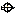
瞄準射擊放大 3 倍：
遊戲實際大小 1 倍：每個技能依序是技能列（16×16）與技能樹（14×14）。分隔線左邊是新的，右邊是既有的（同一張原圖重新縮成原尺寸）。
放大 3 倍：
遊戲實際大小 1 倍：每個技能依序是技能列（16×16）與技能樹（14×14）。分隔線左邊是新的，右邊是既有的（同一張原圖重新縮成原尺寸）。
放大 3 倍：
遊戲實際大小 1 倍：每個技能依序是技能列（16×16）與技能樹（14×14）。分隔線左邊是新的，右邊是既有的（同一張原圖重新縮成原尺寸）。
放大 3 倍：
遊戲實際大小 1 倍：每個技能依序是技能列（16×16）與技能樹（14×14）。分隔線左邊是新的，右邊是既有的（同一張原圖重新縮成原尺寸）。
放大 3 倍：
遊戲實際大小 1 倍：每個技能依序是技能列（16×16）與技能樹（14×14）。
放大 3 倍：
遊戲實際大小 1 倍：每個技能依序是技能列（16×16）與技能樹（14×14）。
放大 3 倍：
紅框是圖案實際佔的範圍，青色虛線是中央 14×14 的目標框；紅底的格子沒過尺寸檢查（長邊、置中）。
原圖為 codex 輸出（已把背景校正為純洋紅）；下方為該版後處理結果與機械 QA。
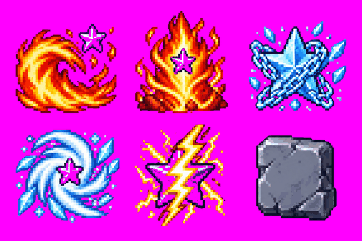
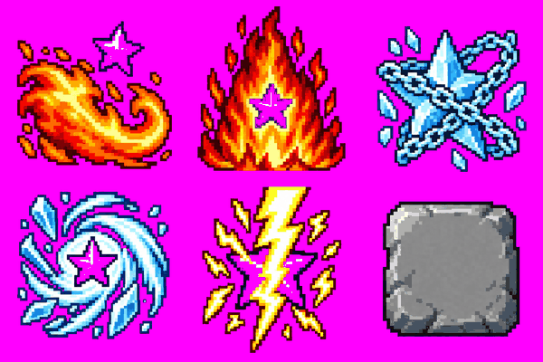
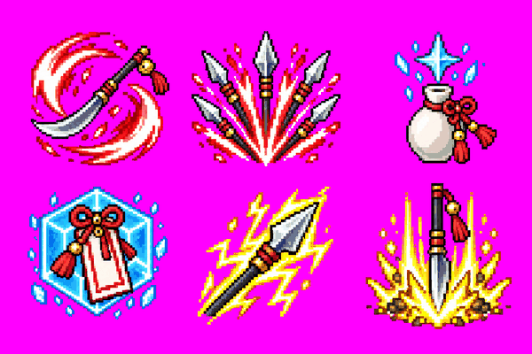
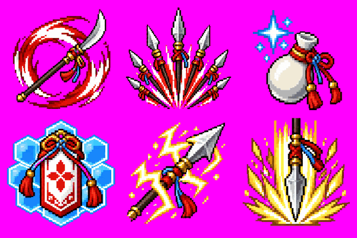
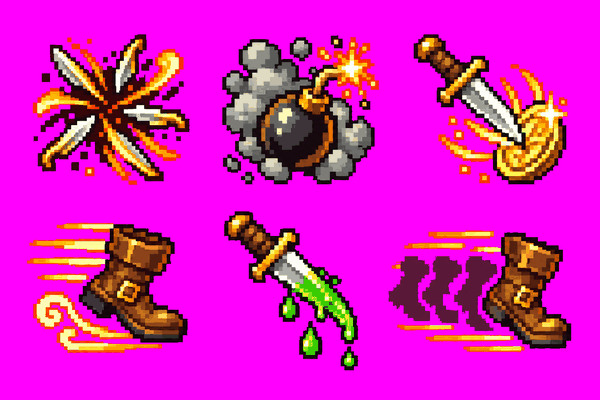
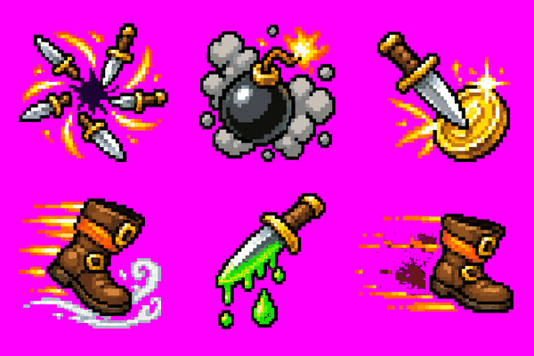
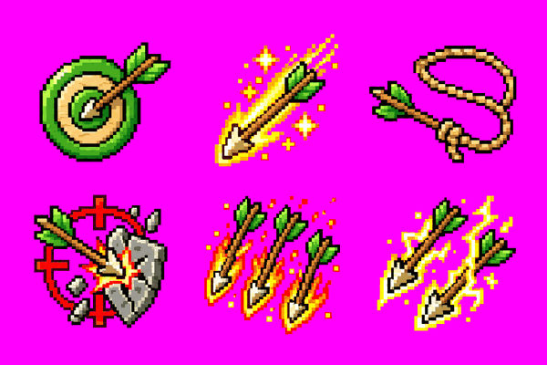
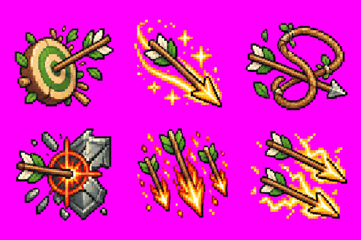
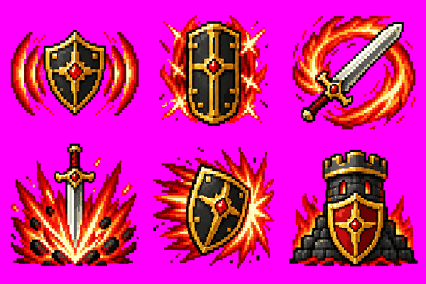
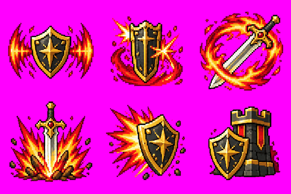
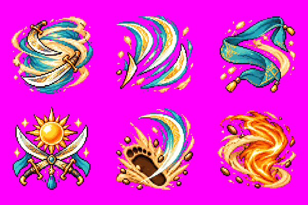
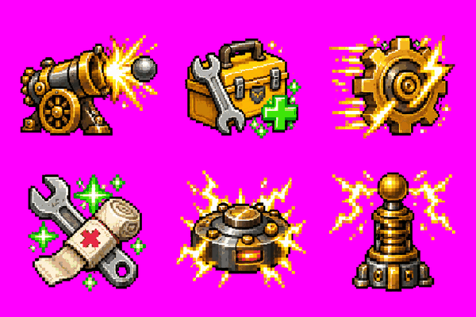
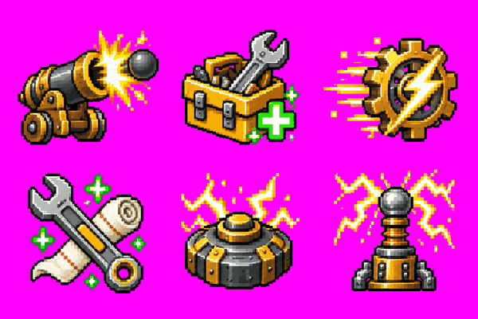
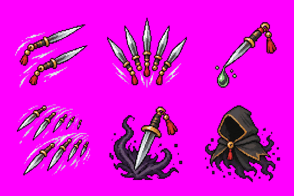
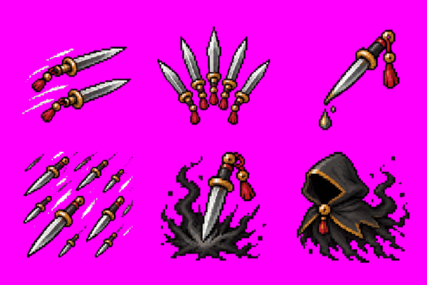
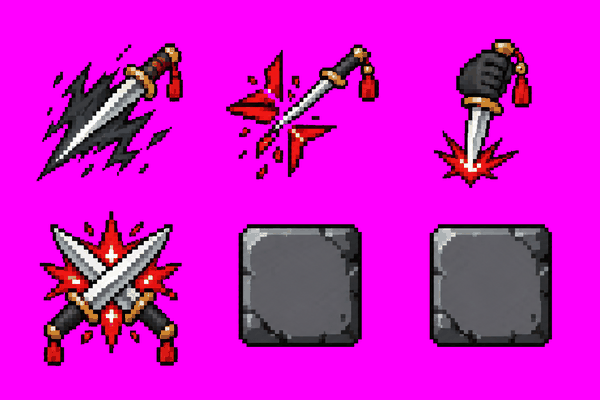
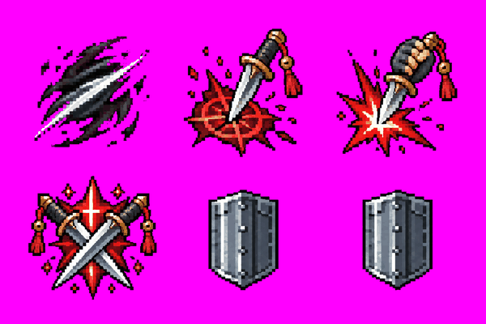
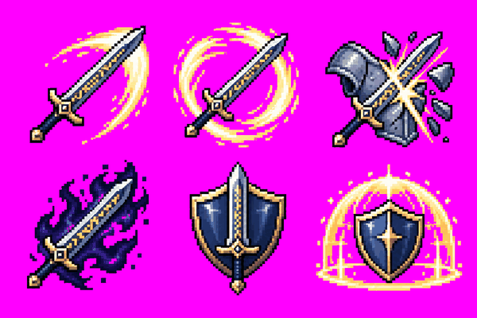
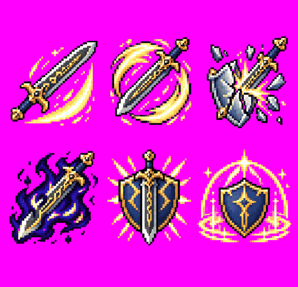
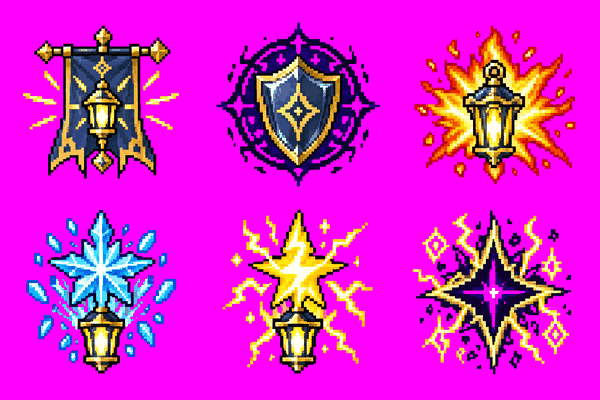
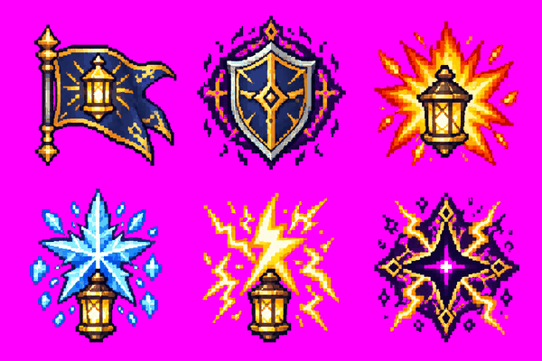
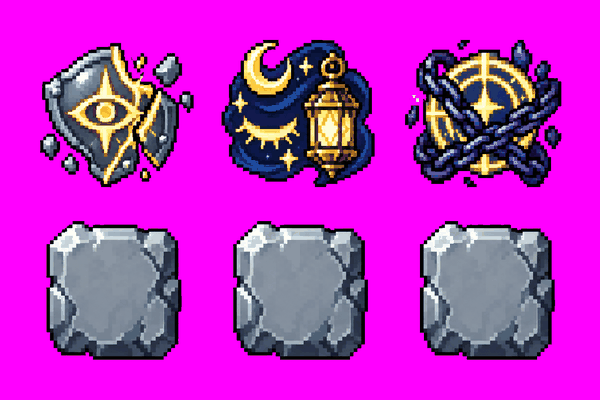
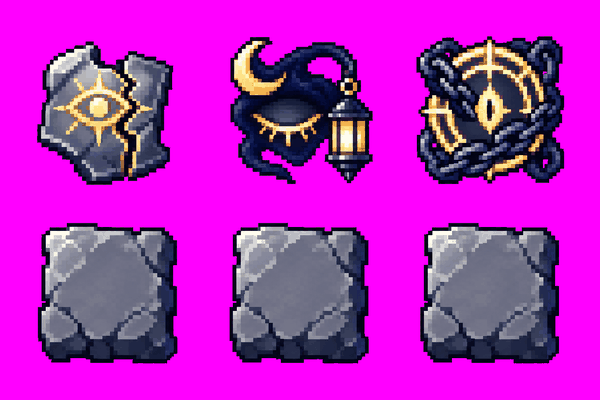
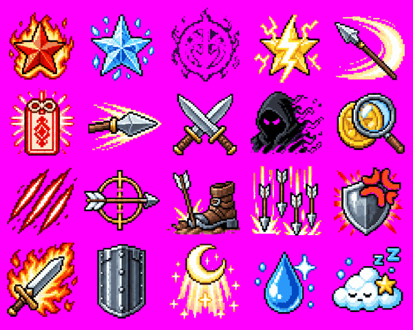
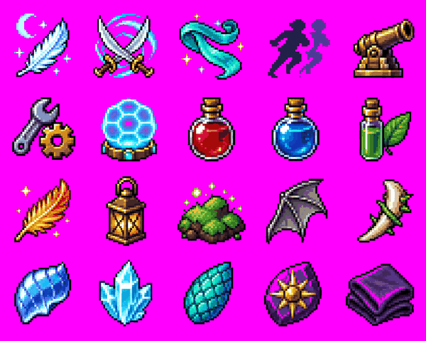